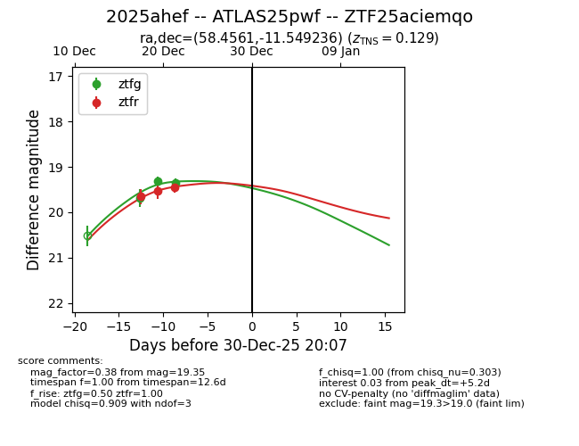
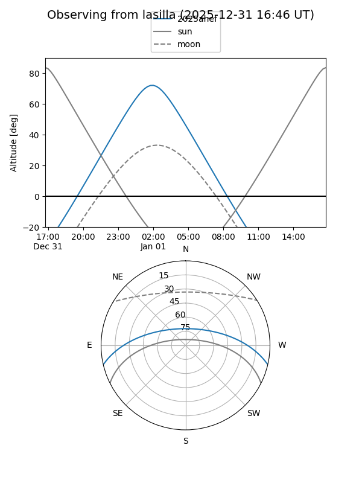
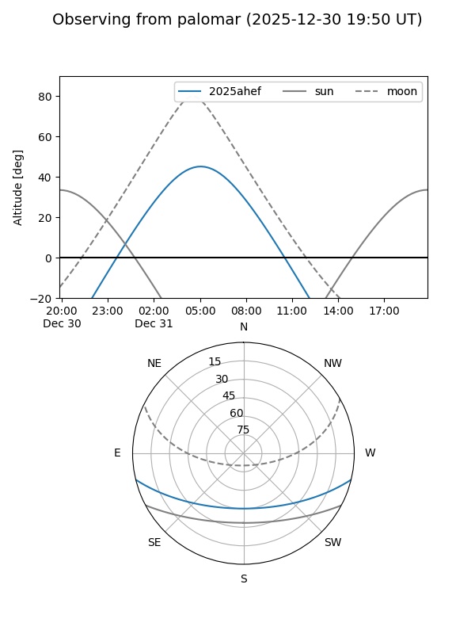
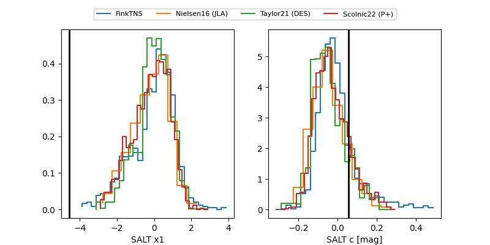

2025ahef
Target 2025ahef at 2025-12-30 18:08
Aliases and brokers:
FINK: fink-portal.org/ZTF25aciemqo
Lasair: lasair-ztf.lsst.ac.uk/objects/ZTF25aciemqo
ALeRCE: alerce.online/object/ZTF25aciemqo
TNS: wis-tns.org/object/2025ahef
YSE: ziggy.ucolick.org/yse/transient_detail/2025ahef
alt names
ZTF25aciemqo (ztf,fink_ztf)
2025ahef (tns,yse)
ATLAS25pwf (atlas)
Coordinates:
equatorial (ra, dec) = 58.4561,-11.54924
equatorial (HMS+DMS) = 03:53:49.46,-11:32:57.25
galactic (l, b) = (202.0621,-44.54054)
Flags:
confirmed ia
Photometry:
last ztfg=19.35, ztfr=19.45
3 ztfg, 3 ztfr detections
Lightcurve

Visibility


Additional plots
